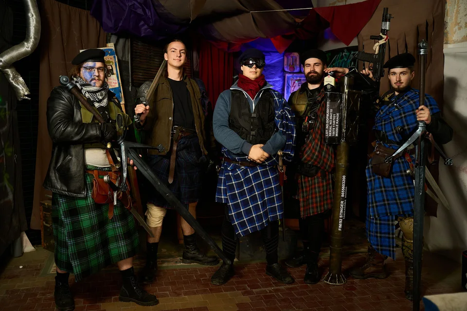

- Профиль
- Выходцы из Новой Шотландии, считали себя бессмертными.
- Локация
- Новая Шотландия, Фрисити
Архивная справка
Горцы считали себя потомками шотландских кланов. В их преданиях подвиги предков звучали как истории о бессмертных дуэлянтах, а серьёзность, с которой отряд их пересказывал, сама стала частью шутки.
В хронике Узла отмечено, что горцы получили базу, известную как Новая Шотландия, и исследовали заражённую зону.